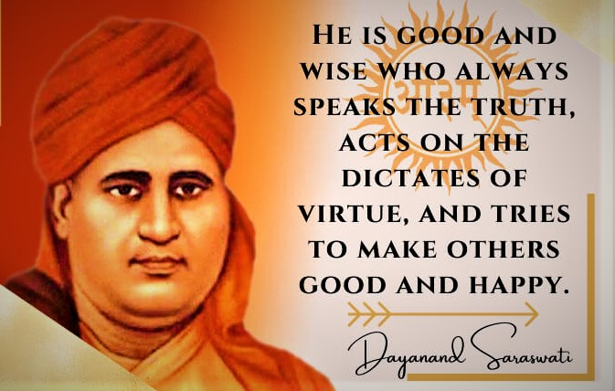

Biography Of Swami Dayanand Sarawati

He was a Brahmin by caste and he defined the word Brahmin by his deeds. A Brahmin is "one who is a worshiper of knowledge and a contributor who gives knowledge to the ignorant". Swamiji read Vedas and Upanishads throughout his and benefited the people of the world with that knowledge.
He called idol worship futile. He described Vedic religion as the best in the form of God in the formless Omkar. In the year 1875, Swami Dayanand Saraswati founded the Arya Samaj. In the revolution of 1857, Swamiji made his invaluable Contribution. He took a heavy blow from British rule and died on 30 October 1883 due to a conspiracy against him.
Swami Dayanand Saraswati believed in the Vedic religion. He always opposed the immoral practices and superstitions prevailing in the nation. He explained the importance of distinct direction and Vedic knowledge to society. He described the fruits of karma and karma as the basic principle of life.
He was a great thinker, he tried to distance society from religious fanatics with his ideas. It was a great patriot who gave the message of Swarajya, which was later adopted by Bal Gangadhar Tilak and gave the slogan of Swarajya is my birthright.
Many great sons of the country were inspired by the ideals of Swami Dayanand Saraswati Ji and only by following the path shown by them, did those sons give freedom to the country.
After Death-
After the death of Swami Dayanandji on October 30, 1883, an idea was put forward to maintain his ideals, “Swami ji has served the country, mankind and Vedic religion throughout his life, so we are indebted to him. To repay this debt, a memorial should be established in his name. Therefore, keeping this objective in front, the Dayanand Anglo Vedic (DAV) College Trust and Management Society was established in 1885 in Lahore. Whose objective was, “We are trying to establish such an institution in which only the virtues of the present education system will be abandoned by abandoning its demerits. Educated and uneducated class will be brought closer by the education of Sanskrit and Hindi.